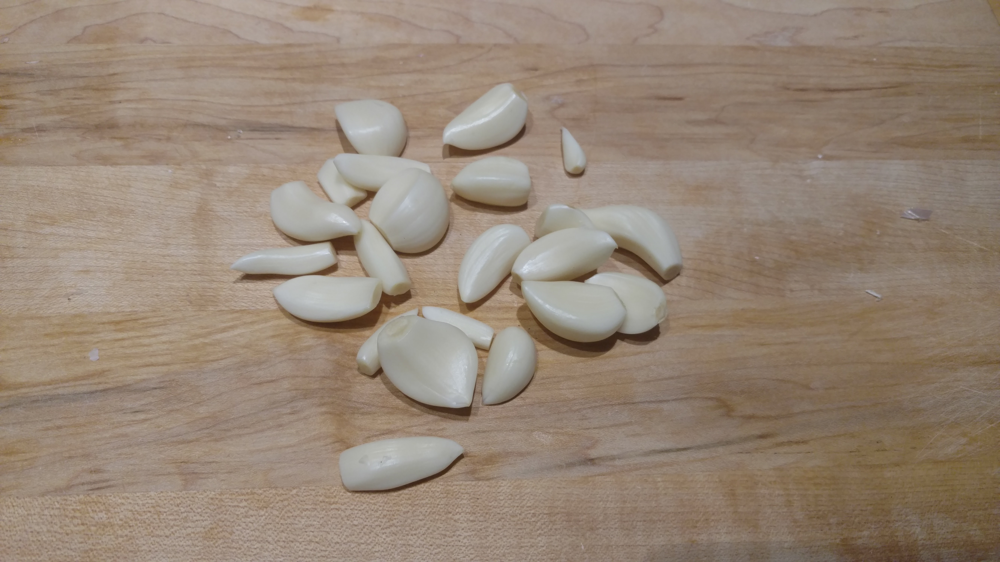
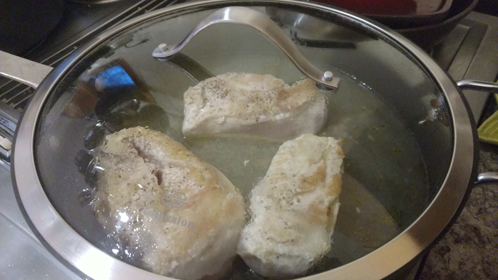
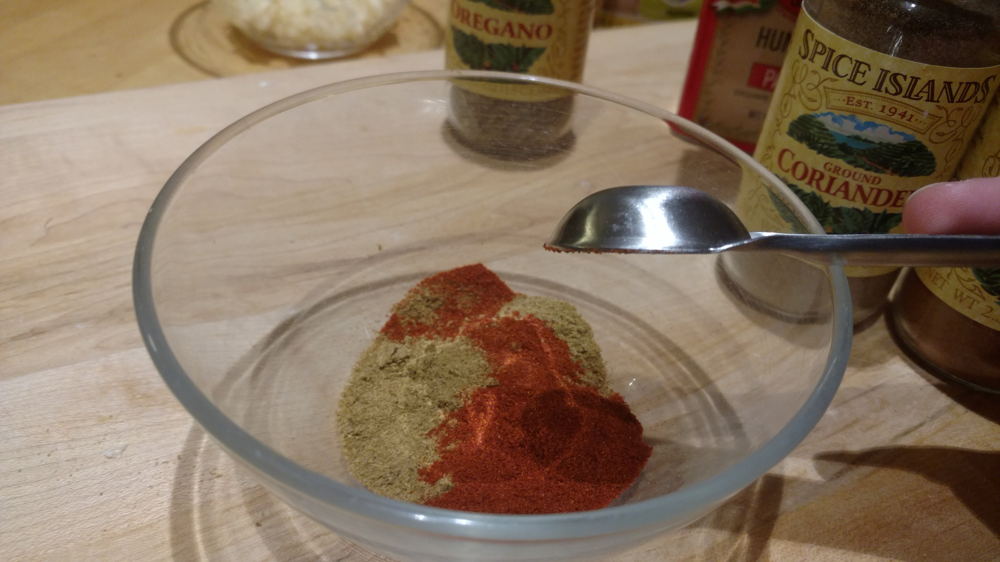
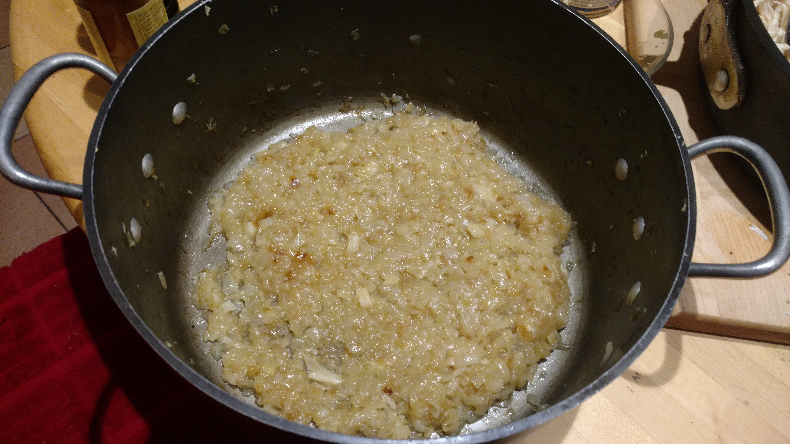
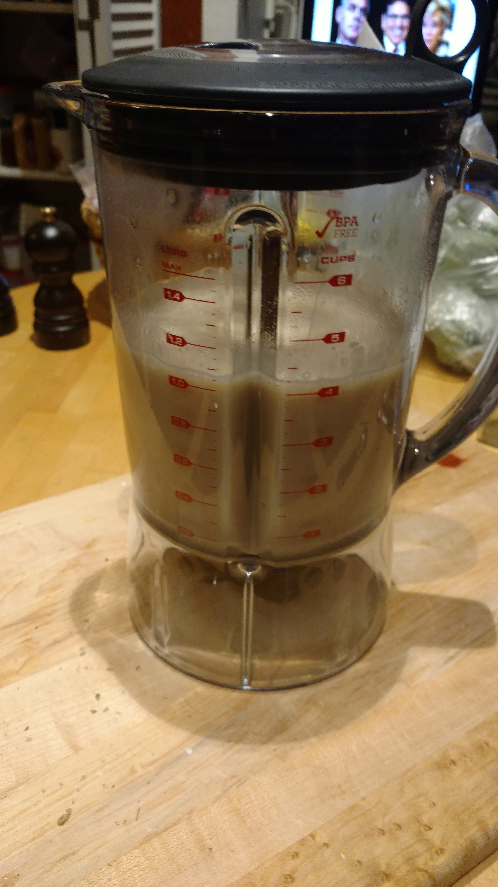

This non-traditional chili is amazingly creamy and flavorful, but surprisingly low-fat and full of fiber. It’s a complex recipe, but it’s so worth it in the end!
Whenever we get a blizzard and I’m stuck inside, I always find myself craving this recipe. It feels like such a reward after shoveling snow in the freezing cold. When it comes to Chili, you can’t get much more non-traditional than this recipe, but boy is it good as its own thing. I even came in second place at a Chili Cook-Off where it was the only white chili there! The non-fat Evaporated milk and Neufchatel cheese make it take like a decadent cream-based dish, without all fat and calories. The baby corn gives a bright, summery flavor that chili is often missing. The caramelized onions lend their complex sweetness. This recipe is one of my absolute favorites- the only downside is that it’s a pretty laborious dish. To combat this, I often make a double recipe and freeze half so I can enjoy the rewards of my work twice! That is what I did while making this recipe today, so the recipe below is for the regular size, but the photos show double- sorry guys! Let’s get started on this amazing dish!
I always like to start out by cutting the onions. It’s one of the most labor intensive parts of any recipe, and they need to be cooked first. Normally it would be two onions, but since I’m doubling it, it’s bumped on up to four- man that was a lot of mincing. Having lots of onions is super important to this recipe since when we caramelize them they cook down to a fraction of their original volume. You won’t even believe what they look like! When caramelizing onions, I like to do them a certain way to speed up the process- caramelizing onions traditionally takes hours and I don’t have time for that! I cook the onions on high until all the water cooks off, stirring them frequently to prevent them from overcooking or browning on just the edges. Before they can start caramelizing the water in the onions has to cook completely off, so cooking them high in the beginning expedites this process. Once that happens then they’re just starting to brown, I turn them down to medium. I cook them on medium until they reach a golden brown. I usually throw the garlic in during this step- it burns if you put it in on high, and doesn’t cook when you wait too long. Once they’ve reached the color you like, then turn them onto low and let them do their thing. This is when the real caramelizing happens- aka pure magic. This does take a bit of time to get the onions really cooked to this point, but it is so worth it!
After the onions go into the pot, I mince my garlic while those get started. I tend to multitask on the recipe while I cook and it only sometimes comes back to bit me! I love garlic- probably too much if we’re being honest, and that always translates into my cooking. Always use the amount of garlic that you want! Here I used a whole head- I could’ve used less, sure, but why limit such amazing flavors! I minced it finely and set it aside to add in when the onions are ready.
Having moist shredded chicken is key to this recipe. Nothing ruins a dish faster than dry, stringy chicken. To make this, heat oil in a large skillet until it’s shimmering. Cook the chicken breasts about 5 minutes or until it’s golden brown. Then you flip it, add chicken broth, and cook it for about 10 minutes or until it’s fully cooked. For the shredded chicken, there’s a couple ways to make this step easier, but of course I choose not to. You can buy a rotisserie chicken if you rather skip this. The second thing one can do to make it easier it shred the chicken in a food processor. People often like to do that for any type of shredded meat. But personally, I like to shred it by hand. It gives me better control over the sizes of pieces, and it gives your arms a bit of a workout too!
Then we mix up all the spices, which absolutely make this dish. All the incredible spices come together for the most amazing flavor 
These onions caramelized up so nicely. But don't forget, this took a lot of time for them to really break down to this point and become sweet. Look back to how many onions this started out as, and how much they cooked down to. It really is amazing!
And while that's stewing, I like to blend the beans. I drain all the cans as much as possible into the blender, and 1/3 can each of the beans themselves. This makes the chili super thick and creamy without actually needing heavy cream in it. It's really what makes the chili so good. With a few more touches and a little simmering, we end up with our delicious, amazing chili!